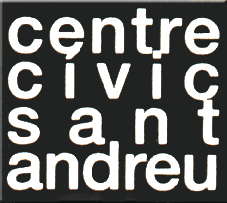

|

Carrer Gran, 111 · 933 119 953 · Sant Andreu de Palomar |
|
|
Activitats
- gener
- març 2008
|
Expressió Bijuteria Una activitat per aprendre a fer tu mateix els teus complements utilitzant diferents materials i tècniques. Professora: Ana Ruiz Dimecres de 19.30 a 21h 8 sessions 42 € Escriptura Aprendrem a gaudir de la pròpia paraula de descobrir la creativa escrita, experimentant per tal de descobrir la nostra creativitat literària. Professora: Ana Carlota Dijous de 17.30 a 19h 8 sessions 42 € Fotografia digital Seguim aprofundint en el món de la fotografia digital, aprenent recursos i tècniques per tal de treure major profit a la nostra camera. Professor: Óscar Zamora Dimarts de 19 a 20.30h 8 sessions 42 € Dissabte de 11.30 a 13h 8 sessions 42 € Photoshop Vine amb el teu portàtil, podràs aprendre a retocar les teves fotos o imatges digitals. Professor: Jaume Juncadella Dissabte de 11 a 12.30h 42 € Divendres de 18 a 19.30 h 8 sessions 42 € Curtmetratge La revolució en el món del vídeo ens permet experimentar amb les diferents eines del llenguatge cinematogràfic: guió, producció, realització, so, fotografia, art, i a la fi, edició i muntatge. Professora: Julia Morando Dimecres 17.30 a 19h 8 sessions 42 € Dansa del ventre Cuida’t el cos amb ritme, amb una dansa que es basa en la tècnica de l’antic Egipte, relacionada amb els cultes de fertilitat. 2 horaris a escollir: Dimarts de 10.30 a 12h Divendres de 18 a 19.30h 8 sessions 42 € Danses africanes Ens sorprendran i gaudirem amb les danses dels pobles de l’Àfrica negra, especialment els ball tradicionals de l’Àfrica occidental. Professora: Nicole Sidoine Divendres 16.30 a 18h 8 sessions 42 € JOCVIU Volem informar-vos de la nova activitat adreçada a persones amb discapacitat (intel·lectual prioritàriament). Es tracta d'un taller d'expressió que es realitza els dimecres de 18 a 20h al centre. Per a més info: JOCVIU associació Tel. 93. 303.39.82 (matins) |
Humanitats i ciències socials Ciutats europees Estudiarem l'arquitectura i els elements que determinen la forma de les ciutats europees en la seva configuració contemporània. Professora: Gemma Solanellas Dijous 20 a 21.30h 8 sessions 42 € Viatja a les properes exposicions Per estar “al dia” en les últimes exposicions, de la ma d'uns experts que facilitaran la seva interpretació. Professora: Mariona Romaguera Dissabte 11 a 13h els dies 19 i 26 gener, 2, 9, 16 i 23 febrer 6 sessions 42 € L'A, B, C de la música moderna i el Jazz Mitjançant audicions i vídeos gaudirem i podrem orientar-nos en les músiques més populars dels segle XX. El blues, els espirituals, el country, el naixement del jazz, les bandes de swing, el rythm and blues, el rock and roll i el pop. Fins arribar al hip hop. Professor: Xavier Fort Divendres 17 a 19h els dies 18 gener, 1, 15, 29 febrer 4 sessions 28 € Anem al cinema Un curs per conèixer la diversitat d’oferta cinematogràfica de Barcelona, i aprendre a valorar-la d’una manera crítica. Veurem films de diferents estils que la setmana següent comentarem a classe. Les entrades aniran a càrrec dels participants. Professor: Enric Ros Divendres 17 a 18.30h els dies 25 gener, 8, 22 febrer i 7 març 4 sessions 21 € Anem al teatre Aquest curs facilitarà les eines crítiques per gaudir del teatre que es fa a Barcelona. Coneixerem el teatre a través d’un recorregut per la seva història fins al teatre contemporani i la dramatúrgia catalana actual. Professor: Karel Mena Dijous 19 a 20.30h els dies 24 gener, 7, 21 febrer, 6 març 4 sessions 21 € GAG (Grup d'Amics Gais) Et presentem la nova associació lúdico cultural que pots trobar al centre cada dissabte a partir de les 18 h. Un grup obert a gais, lesbianes, transsexuals i bisexuals. Fan excursions, xerrades, video-fòrums, tallers.... Més informació i calendari d'activitats a: www.amicsgais.org. |
Itineraris L'església del mar A partir de la mirada i les paraules de l'autor de la novel·la, Ildefonso Falcones, descobrirem el passat medieval de Barcelona. Punt de trobada: davant Sta Maria del Mar Professora: Carolina Chifoni Diumenge 24 de febrer 10.30 a 13.30h 9,50 € Passegem per Collserola: de Vallvidrera a Vil·la Joana Una passejada agradable travessant boscos frondosos i fresocs arribant al pantà de Vallvidrera. Singular indret recuperat com a espai aquàtic, i acabant a Vil·la Joana. Punt de trobada: Estació Vallvidrera Superior del Funicular de Vallvidrera Professor: Joan Solé Dissabte 8 de març 10h 9,50 € Gaudeix del modernisme al Passeig de Gràcia Fer una nova mirada a les cases modernistes del Passeig de Gràcia de la mà d'una professora experta que ens farà gaudir del recorregut. Punt de trobada: davant del Palau Robert (Pg. de Gràcia, 107) Professora: Carolina Chifoni Diumenge 9 de març 10.30 a 13.30h 9,50 € Exposicions SANT JOAN DE MATA 50 anys de bàsquet 1958 - 2008 Inauguració 6 de febrer a 2/4 de 8 de la tarda (19.30h) Del 6 al 29 de febrer Espai WiFi gratuït demana el password a consergeria |
|
|